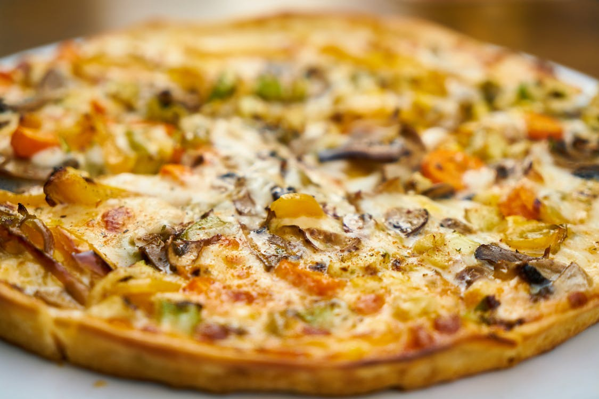
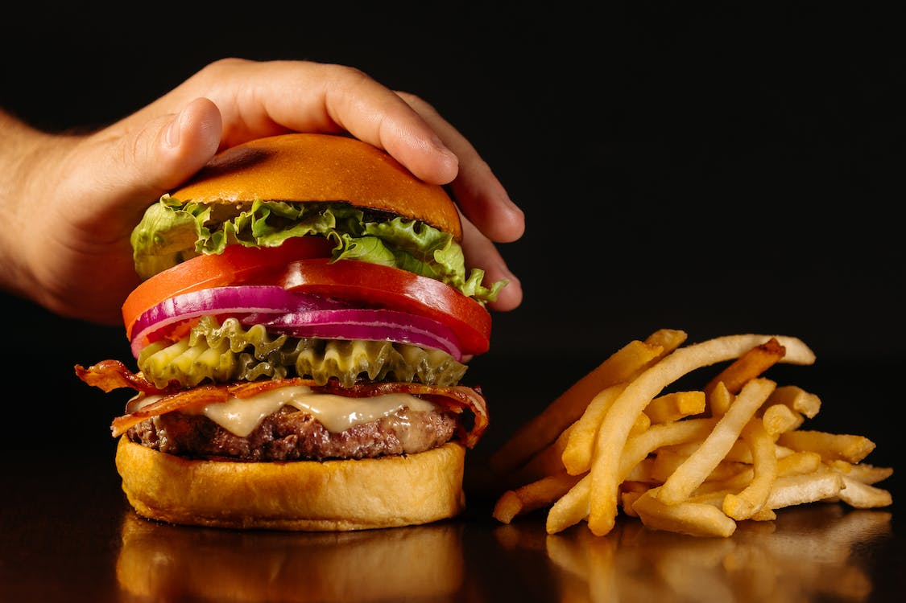
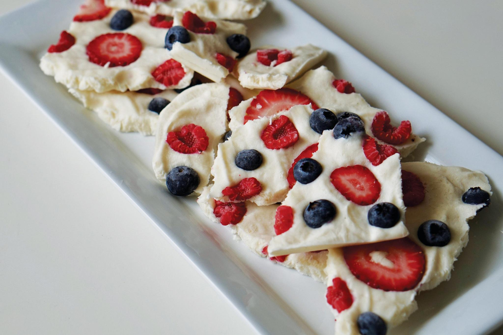
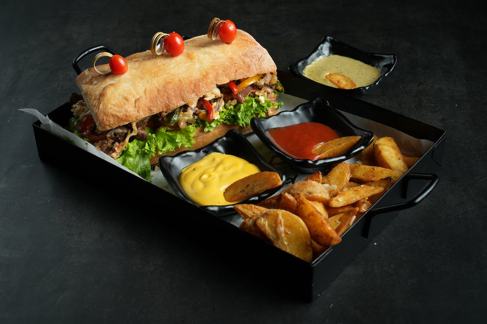
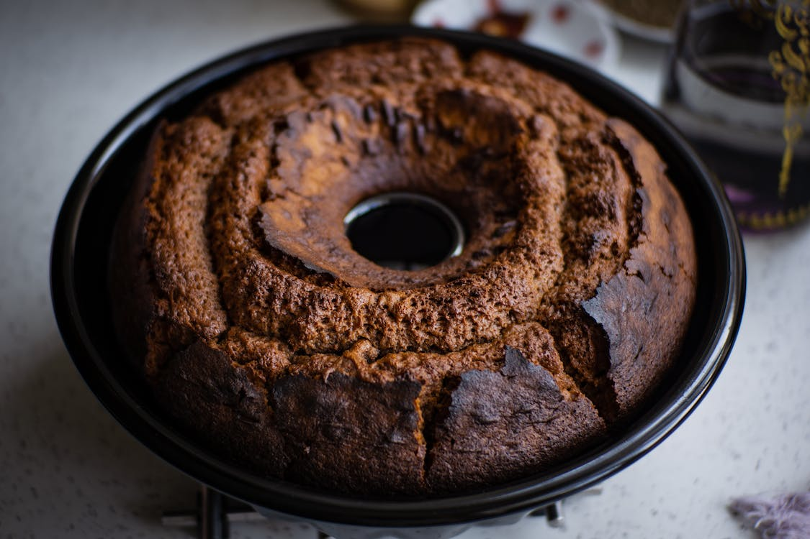

🍎 Y U M M Y F O O D I E 🍎
HOME
RECIPE FINDER
Dessert
Dinner
Lunch
Breakfast
POPULAR RECIPES
5 stars
Trending
Recently added recipe
Editor's choice
RECIPE SUBMISSION
ABOUT US
CONTACT
HELLO! WELCOME TO YUMMY FOODIE
🍙 Let's cook with confidence ! 🍙
1 / 6

2 / 6

3 / 6

4 / 6

5 / 6

6 / 6
❮
❯
NASI KERABU
NASI DAGANG
NASI LEMAK
STEAK
CHICKEN SALAD
APPLE PIE